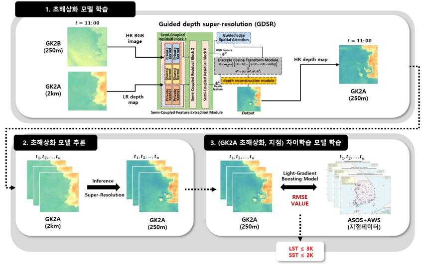
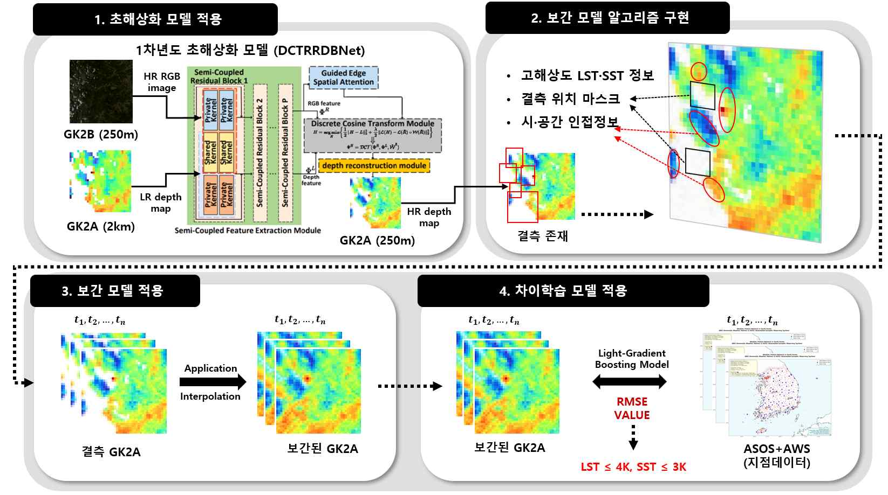

인공지능 기반 표면온도(지표면, 해수면) 초해상화 기술 개발 Development of AI-Based Super-Resolution for Land and Sea Surface Temperature
위성 표면온도를 2km에서 250m로 초해상화하고, 지상 관측과의 차이를 보정하며 구름으로 인한 결측치를 복원하는 다년간 연구 과제.
A multi-year project combining 2km-to-250m satellite surface-temperature super-resolution, calibration against ground observations, and interpolation of cloud-induced missing values.
개요Overview
- 상위 과제Parent project
- 위성기반 극한기후·기후변화 감시 기술개발Development of Satellite-Based Monitoring Technologies for Climate Extremes and Climate Change
- 주관Agency
- 한국기상산업기술원(기상청)Korea Meteorological Institute (KMI), under the Korea Meteorological Administration (KMA)
- 역할Role
- 참여연구원 · 동국대학교 DAMILABParticipating Researcher · DAMILAB, Dongguk University
- 참여 기간Participation
- 2025.04 – 2027.08 (종료 예정)(expected completion)
- 핵심 기술Methods
- GDSR · DCTRRDBNet · Difference Learning · LightGBM
지표면 온도(LST)와 해수면 온도(SST)의 공간 해상도와 관측 정확도를 높여 정밀 기후 분석과 시계열 위성 데이터 활용을 지원하는 연구입니다. 저해상도 GK2A 표면온도와 고해상도 GK2B RGB 영상을 함께 사용하며, 초해상화 결과와 지상 관측 간의 차이를 학습하는 보정 모델을 결합합니다. 구름이 없는 조건에서 시작해 구름 결측치 보간, 전천후(All-Sky) 최적화 프레임워크로 연구 범위를 확장합니다.
This project improves the spatial resolution and observational accuracy of land surface temperature (LST) and sea surface temperature (SST) for detailed climate analysis and satellite time-series applications. It combines low-resolution GK2A surface-temperature data with high-resolution GK2B RGB imagery, then learns corrections against ground observations. The research progresses from clear-sky super-resolution to cloud-gap interpolation and an all-sky optimization framework.
동기 및 문제 정의Background & Motivation
위성 기반 표면온도 데이터에는 km 수준의 낮은 공간 해상도와 지상 관측과의 도메인 차이라는 두 가지 문제가 있습니다. 기존 방법은 경계와 표면의 세부 구조를 나타내는 고주파 정보를 충분히 복원하지 못하고, 구름으로 가려진 영역의 결측치도 보간하지 못했습니다. 따라서 공간적 세부 구조의 복원, 지상 관측에 맞춘 온도 보정, 시간·공간 정보를 이용한 결측치 복원을 함께 다뤄야 합니다.
Satellite surface-temperature data face two central limitations: kilometer-scale spatial resolution and a domain gap from ground observations. Existing methods do not adequately recover high-frequency details such as boundaries and surface structure, or interpolate values missing under clouds. The task therefore requires spatial-detail recovery, temperature calibration against ground measurements, and gap reconstruction using temporal and spatial context.
접근 방법Approach

Guided Depth Super-Resolution(GDSR) 기반 딥러닝 모델을 설계해 GK2B의 고해상도 RGB 정보를 GK2A 표면온도 복원의 가이드로 사용합니다. 온도 보정에는 초해상화 결과와 지상 관측 사이의 차이를 학습하는 별도 모델을 적용합니다.
- 고주파 정보 복원: DCTNet에 Residual-in-Residual Dense Block을 적용한 DCTRRDBNet으로 경계와 표면의 세부 구조를 복원합니다.
- 지상 관측 기반 차이학습: 관측 지점에 해당하는 위성 픽셀을 추출하고, LightGBM 기반 Difference Learning으로 초해상화된 온도와 지상 관측 간의 차이를 보정합니다. 이 과정에서 시·공간 불일치를 다룹니다.
- 구름 결측치 보간: 결측 위치와 시·공간 인접 정보를 활용하는 보간 알고리즘을 구현 중이며, 관련 보간 방법론 조사와 딥러닝 모델 검토를 진행합니다.
A Guided Depth Super-Resolution (GDSR) model uses high-resolution GK2B RGB information to guide the reconstruction of GK2A surface temperature. A separate model calibrates the super-resolved temperatures by learning their differences from ground observations.
- High-frequency detail recovery: DCTRRDBNet augments DCTNet with Residual-in-Residual Dense Blocks to reconstruct boundaries and fine surface structure.
- Ground-observation difference learning: Satellite pixels are extracted at observation locations, and LightGBM-based Difference Learning corrects differences between super-resolved temperatures and ground measurements while addressing spatial and temporal misalignment.
- Cloud-gap interpolation: Algorithms using missing-value locations and neighboring spatial and temporal information are under implementation, alongside a review of interpolation methods and deep-learning models.
담당 역할 및 기여My Role & Contributions
참여연구원으로서 대규모 위성·지상 관측 데이터 처리와 모델 설계에 참여하고, 관측 데이터 간 차이를 학습하는 보정 모델 설계 아이디어를 제안했습니다.
As a participating researcher, I contributed to large-scale satellite and ground-observation data processing and model design, and proposed the difference-learning correction model.
- 대규모 데이터 전처리: 40만 건 이상의 위성·지상 관측 데이터를 전처리하고, 딥러닝 기반 시계열·공간 데이터 처리에 참여했습니다.
- 차이학습 모델 설계: 위성 초해상화 결과와 지상 관측의 차이를 보정하는 Difference Learning 아이디어를 제안하고, 픽셀 단위 지점 추출과 LightGBM 기반 모델 구현에 참여했습니다.
- 결측치 복원 연구: 구름 결측치 보간 방법을 조사하고, 시·공간 인접 정보를 활용하는 기초 모델 구현을 진행하고 있습니다.
- Large-scale preprocessing: Preprocessed more than 400,000 satellite and ground-observation records and contributed to deep-learning-based temporal and spatial data processing.
- Difference-learning model design: Proposed learning corrections between super-resolved satellite temperatures and ground observations, and contributed to observation-site pixel extraction and the LightGBM implementation.
- Missing-value reconstruction: Investigating cloud-gap interpolation methods and implementing a baseline model using neighboring spatial and temporal information.
주요 성과Results
- 해상도 개선: 표면온도 데이터를 2km → 250m로 초해상화했습니다.
- 1차년도 정량 목표 달성: 지상 관측 데이터 기준 RMSE 3K 이하를 달성했습니다.
- 세부 구조 복원: ×4·×8 복원 결과에서 원본 GK2A보다 호수와 해안 경계의 세부 구조가 구체적으로 표현되고, GK2B 가이드의 공간 정보가 반영됩니다.
- 후속 연구: 2차년도 목표인 구름 결측치 보간의 기초 모델을 구현 중입니다.
- Resolution improvement: Super-resolved surface-temperature data from 2km to 250m.
- Year-1 quantitative target met: Achieved RMSE ≤ 3K against ground-observation data.
- Spatial-detail recovery: The ×4 and ×8 results show more detailed lake and coastal boundaries than the original GK2A input, reflecting spatial information from the GK2B guide.
- Follow-up work: A baseline for the year-2 cloud-gap interpolation objective is under implementation.
연차별 계획 및 진행 상황Yearly Plan & Progress
- 1차년도 · Clear-Sky: 구름이 없는 조건의 표면온도 초해상화와 지상 관측 보정. 해상도 개선 및 RMSE 목표 달성.
- 2차년도 · Cloud-Sky: 구름이 있는 조건의 표면온도 초해상화와 결측치 보간. 기초 모델 구현 진행 중.
- 3차년도 · All-Sky: 전천후 조건의 표면온도 초해상화 및 최적화 프레임워크 개발 예정.
- Year 1 · Clear-Sky: Surface-temperature super-resolution and calibration under cloud-free conditions. Resolution and RMSE objectives achieved.
- Year 2 · Cloud-Sky: Surface-temperature super-resolution and gap interpolation under cloudy conditions. Baseline implementation in progress.
- Year 3 · All-Sky: Planned development of surface-temperature super-resolution and an optimization framework across sky conditions.

참고 문헌References
- Zhong, Z. et al. Guided depth map super-resolution: A survey. ACM Computing Surveys, 2023.
- Zhao, Z. et al. Discrete cosine transform network for guided depth map super-resolution. CVPR, 2022.
- Ke, G. et al. LightGBM: A highly efficient gradient boosting decision tree. NeurIPS, 2017.